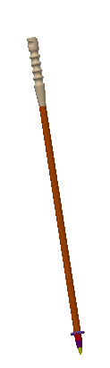
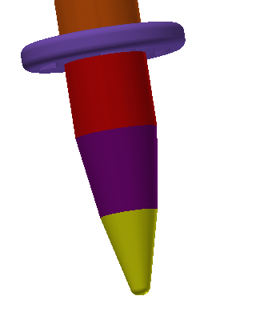

제품설명과 원리
- 독특하고 신기한 등산스틱?
- 압전소자란?
- 제품 설명과 원리
제품설명과 원리

제품설명
저희 제품은 등산을 하면서 빠질수 없는 등산스틱에 압전소자를 부착하여 등산을 하면서 전기를 만들 수 있게 만들었습니다.
저희는 만들어진 전기로 야간이나 새벽에 등산하실때 필요한 해드렌턴을 대신하여 등산스틱에 LED등을 달아서
해드렌턴을 대신 할 것이며, 깊은 산속에서 핸드폰도 안될때 응급상황이 발생하였을때를 대비하여 GPS를 달 것이며,
추가적으로 등산하실떄 심심하지 않으시라고 라디오나 핸드폰 무선 충전기를 부착할 예정 입니다.

제품원리
저희는 압전소자를 등산스틱 맨 아래에 부착하였으며, 하나로는 부족할것이라 생각이 드러 총3개를 부착하였습니다.
그리고 압전소자에서 만들어진 배터리를 동그란 충전용 배터리로 가여 저장되게 했으며, 동그란 배터리를 이용한 이유는
등산스틱이 둥근 모양이다 보니 공간 활용을 하기 위해서 동그란 배터리를 사용하게 되었습니다.